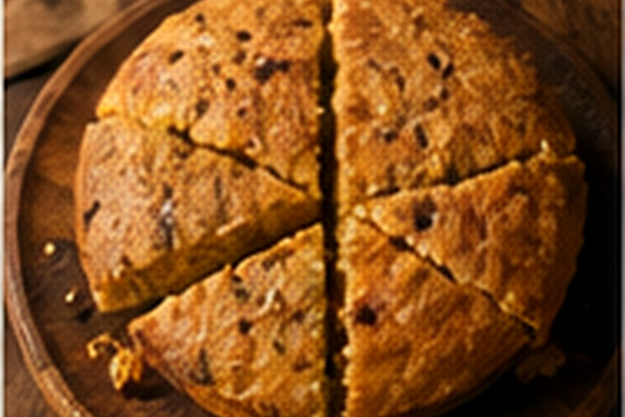

Cherokee Bean Bread
A respectful home adaptation inspired by the Cherokee pairing of corn and beans in a compact, sustaining boiled bread.

About this dish
Traditional Cherokee bean bread is not the same thing as a baked loaf. Cherokee cook Nico Albert explains that the traditional preparation uses corn treated with wood ash, ground into a dough, combined with beans and hot bean liquid, wrapped in corn blades and boiled. The result has a dumpling-like texture.
This Fringe Table version is intentionally labeled a home adaptation because supermarket cornmeal cannot reproduce the flavor, texture or process of traditionally prepared corn. It keeps the corn-and-bean structure while using ingredients accessible to most home cooks.
Corn and beans as living Cherokee foodways
PBS's Native America project documents Cherokee bean bread as a staple dish and notes that the traditional method begins with dried corn cooked with wood ash to remove the hulls. The corn is ground, mixed with beans and bean liquid, shaped, wrapped and boiled.
That technique reflects a much older Indigenous relationship with corn and beans than modern supermarket substitutions can capture. For that reason, this page treats the original practice as its own living food tradition rather than presenting the adaptation below as interchangeable with it.
This recipe is explicitly an accessible home interpretation. Traditional family and community methods should be learned from Cherokee cooks and cultural sources directly.
Preparation notes
The hot liquid hydrates the cornmeal and carries bean flavor into the dough. Add it slowly because cornmeal absorption varies.
The cakes need to hold together in simmering water. If the dough cracks badly when shaped, it needs a little more liquid.
A violent boil can break the cakes apart. Gentle bubbling gives the center time to firm.
Ingredients & detailed method
Ingredients
- 2 cups fine cornmeal
- 1 1/2 cups cooked pinto or brown beans, drained
- 3/4–1 cup hot bean cooking liquid or hot water
- Corn husks, softened in hot water, optional
- Small pinch of salt, optional for this adaptation only
Method
- 1.Prepare the beans. Drain cooked beans but reserve the cooking liquid. Warm the liquid until steaming.
- 2.Combine corn and beans. Put cornmeal in a bowl and fold in the beans gently so they stay mostly whole.
- 3.Hydrate gradually. Add 3/4 cup hot bean liquid in several additions, folding after each one. Checkpoint: the mixture should hold together when squeezed without feeling soupy.
- 4.Rest briefly. Let the dough stand 5 minutes so the cornmeal absorbs moisture. If it becomes crumbly, add hot liquid 1 tablespoon at a time.
- 5.Shape. Wet your hands and form 8 compact oval cakes, pressing firmly enough to remove cracks.
- 6.Wrap if desired. Place each cake in a softened corn husk and fold loosely around it. The wrapper should protect the cake without squeezing it flat.
- 7.Set the water. Bring a wide pot of water to a simmer, then reduce the heat so only gentle bubbles rise.
- 8.Cook. Lower the cakes into the water and simmer 25–30 minutes.
- 9.Check the center. Remove one cake and cut it open. Checkpoint: the middle should be firm and moist, not loose or raw-tasting.
- 10.Drain and rest. Lift the cakes carefully, drain and let them stand 5–10 minutes before serving so the texture settles.